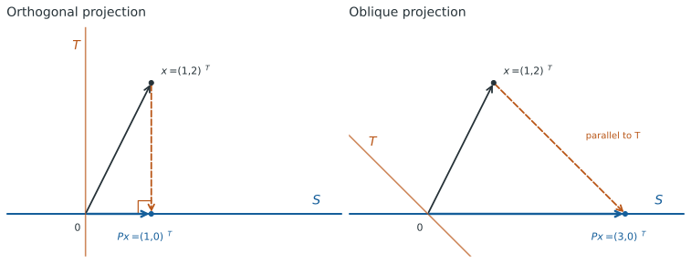

Projections#
A projection splits a vector into two parts and keeps one of them. The two parts belong to complementary subspaces: one is the space we project onto, and the other is the space we project along.
This distinction connects several algorithms in this course. LU factorization removes components using oblique projections. Orthogonal projections select closest approximations and appear in QR factorization, eigenvalue computations, and iterative methods.
We work first in \(\mathbb{R}^n\) with the usual dot product. The corresponding formulas for complex vectors are given at the end.
Projection onto a Subspace along a Complement#
Suppose \(S\) and \(T\) are complementary subspaces:
This means that every \(x\in\mathbb{R}^n\) has a unique decomposition
The projection onto \(S\) along \(T\) is the map
It keeps the component in \(S\) and removes the component in \(T\). Thus \(P\) acts as the identity on \(S\) and as zero on \(T\). In particular,
The decomposition also shows that \(P\) is linear: adding or scaling two vectors adds or scales their \(S\) and \(T\) components. Applying \(P\) a second time leaves \(Px\) unchanged, so
A square matrix satisfying this identity is called idempotent. Conversely, every idempotent matrix is a projection in the sense just described.
Proof. Let \(P^2=P\), and define its range and null space by
For every \(x\),
The first term is in \(S\), and the second is in \(T\), because \(P(I-P)x=(P-P^2)x=0\). If \(s\in S\), write \(s=Py\); then \(Ps=P^2y=Py=s\). A vector belonging to both \(S\) and \(T\) must therefore satisfy \(Ps=s\) and \(Ps=0\), so it is zero. This proves \(\mathbb{R}^n=S\oplus T\) and the uniqueness of the decomposition.
Specifying the range alone does not determine a projection: the choice of complementary null space also matters. The zero matrix and the identity matrix are projections onto \(\{0\}\) and \(\mathbb{R}^n\), respectively.
The Complementary Projection#
If \(P\) projects onto \(S\) along \(T\), then \(I-P\) projects onto \(T\) along \(S\). Indeed,
The decomposition \(x=Px+(I-P)x\) identifies both components. For a general projection, these components need not be perpendicular.
Products of projections require care: \(P_1P_2\) need not be a projection. If \(P_1P_2=P_2P_1\), however, then \((P_1P_2)^2=P_1^2P_2^2=P_1P_2\). If both projections are orthogonal and commute, their product is also symmetric and hence an orthogonal projection.
A Basis Adapted to the Projection#
Choose a basis \(s_1,\ldots,s_r\) of \(S\) and a basis \(t_1,\ldots,t_{n-r}\) of \(T\). Together they form a basis of \(\mathbb{R}^n\). With
we have
This follows because \(Ps_i=s_i\) and \(Pt_j=0\). By invariance of trace under a change of basis,
Also, \(P\) is invertible only when \(P=I_n\). These statements hold for both orthogonal and oblique projections.
Orthogonal and Oblique Projections#
The projection onto \(S\) is orthogonal when its null space is \(S^\perp\), the set of vectors perpendicular to every vector in \(S\). Its defining geometric properties are
For each subspace \(S\), there is exactly one orthogonal projection, because \(\mathbb{R}^n=S\oplus S^\perp\). A projection whose null space is a different complement is called oblique.
For example, both matrices
project onto the horizontal axis and satisfy \(P^2=P\). Their null spaces differ:
Consequently, they send \(x=(1,2)^T\) to different points: \((1,0)^T\) and \((3,0)^T\), respectively.

Fig. 1 Both projections have the same range \(S\). The segment from \(x\) to \(Px\) is parallel to the null space \(T\), shown in orange.#
Symmetry Characterizes Orthogonal Projections#
For a projection matrix \(P\),
Proof. Suppose first that \(P^T=P\). For \(s=Px\) in its range and \(t\) in its null space,
Thus the range and null space are perpendicular. Since they are complementary, the null space is exactly the orthogonal complement of the range.
Conversely, suppose \(P\) is an orthogonal projection. Decompose both \(x\) and \(y\) into their range and null-space components. Perpendicularity gives
This holds for every \(x,y\), so \(P=P^T\).
An orthogonal projection is different from an orthogonal matrix. A projection onto a proper subspace discards nonzero vectors in its null space and is singular. An orthogonal matrix preserves every vector’s length and is invertible. Only \(I_n\) has both properties.
Formulas for Orthogonal Projections#
An Orthonormal Basis#
Let \(Q=[q_1,\ldots,q_r]\in\mathbb{R}^{n\times r}\) have orthonormal columns spanning \(S\), so \(Q^TQ=I_r\). Then
Proof. The vector \(p=QQ^Tx\) belongs to \(S\). Moreover,
so the residual \(x-p\) is perpendicular to every column of \(Q\), and hence to \(S\). These two conditions identify \(p\) as the orthogonal projection of \(x\).
The computation has two steps: \(Q^Tx\) finds the coefficients of the projected vector in the basis \(q_1,\ldots,q_r\), and \(Q(Q^Tx)\) reconstructs that vector. When \(x\) lies outside \(S\), these are the coordinates of its projection, not coordinates representing all of \(x\).
Here \(Q\) is usually rectangular. If it is square, then \(S=\mathbb{R}^n\) and \(QQ^T=I_n\). Projection onto the zero subspace is simply \(P=0\).
Any Basis of the Subspace#
Let \(A\in\mathbb{R}^{n\times r}\) have linearly independent columns spanning \(S\), with \(1\leq r\leq n\). Then
Proof. Write the projected vector as \(p=Ac\). The condition \(x-p\perp S\) becomes
The matrix \(A^TA\) is invertible: for any nonzero \(c\),
because the columns of \(A\) are linearly independent. Thus
The projection depends only on \(S\), not on the chosen basis. If a spanning matrix has dependent columns, its \(A^TA\) is singular; select a basis for its column space before using this formula.
For a line spanned by a nonzero vector \(a\), the formula reduces to
These formulas describe the projection mathematically. To apply \(P\), one can solve the small system \(A^TAc=A^Tx\) and form \(Ac\); there is no need to form the inverse or the full \(n\times n\) projection matrix. With an orthonormal basis, only the two products \(Q^Tx\) and \(Q(Q^Tx)\) are needed. Later chapters discuss how to compute such bases using QR.
The Closest-Point Property#
The orthogonal projection \(p=Px\) is the unique vector in \(S\) closest to \(x\) in the 2-norm:
Proof. For any \(y\in S\), write \(x-y=(x-p)+(p-y)\) and expand the squared norm:
The cross term is \(2(x-p)^T(p-y)\). It is zero because \(x-p\) is perpendicular to \(S\) and \(p-y\) belongs to \(S\). Therefore,
The right side is minimized uniquely when \(y=p\).
Taking \(y=0\) gives
Thus an orthogonal projection never increases the 2-norm: \(\|Px\|_2\leq\|x\|_2\). If \(P\neq0\), then \(\|P\|_2=1\), because \(Ps=s\) for any nonzero \(s\) in its range. The zero projection has norm zero.
An oblique projection need not give the closest point and can increase lengths. For instance,
satisfies \(P_t^2=P_t\), but sends the unit vector \((0,1)^T\) to \((t,0)^T\). Its output can therefore be arbitrarily long as \(|t|\) increases.
A Formula for Oblique Projections#
Let \(A,B\in\mathbb{R}^{n\times r}\) have linearly independent columns, and assume that \(B^TA\) is invertible. Then
is the projection onto \(S=\operatorname{range}(A)\) along \(T=\ker(B^T)\). The columns of \(B\) span \(T^\perp\), not \(T\) itself.
The invertibility condition is essential. It says that no nonzero vector in \(S\) lies in \(T\); since the dimensions are \(r\) and \(n-r\), the two spaces are complementary. Linearly independent columns in each matrix alone do not suffice. For example, \(A=(1,0)^T\) and \(B=(0,1)^T\) both have independent columns, but \(B^TA=0\).
Proof. We seek \(p=Ac\) such that \(x-p\in\ker(B^T)\). This condition gives
Solving for \(c\) yields the stated formula. It follows directly that
Every \(Px\) is in \(\operatorname{range}(A)\), and \(PA=A\), so the range is exactly that space. Also, \(B^TP=B^T\): if \(Px=0\), then \(B^Tx=0\), while \(B^Tx=0\) immediately implies \(Px=0\). Hence \(\ker(P)=\ker(B^T)\).
Taking \(B=A\) recovers the orthogonal projection formula. More generally, this formula gives an orthogonal projection exactly when the column spaces of \(A\) and \(B\) coincide; otherwise it is oblique.
How Projections Enter the Course#
Oblique projections help describe the elimination steps in LU factorization. Orthogonal projections are used to construct orthonormal bases in QR factorization, and to find approximations in smaller subspaces in eigenvalue computations and iterative methods for solving linear systems. We will explain these connections when we develop each method later in the course.
Complex Vectors#
For the usual complex inner product, replace transposes in the projection formulas by conjugate transposes:
Here \(Q\) and \(A\) span the same subspace, \(Q^HQ=I\), and the same rank and invertibility assumptions apply. An orthogonal projection is characterized by \(P^2=P=P^H\). In the closest-point proof, the cross term becomes \(2\operatorname{Re}((x-p)^H(p-y))\) and vanishes for the same reason.